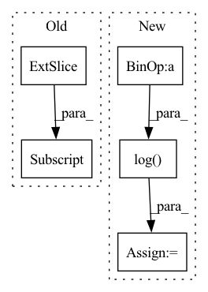

Pattern ID :6216

Before Change
bboxes_classes = 5 if use_object_scores else 4
bbox_out = det_head(fpn_features, classes=bboxes_classes, bias_init="zeros", head_activation=None, name="regressor_", **head_kwargs)
if use_object_scores:
bbox_out, object_out = bbox_out[:, :, :4], bbox_out[:, :, -1:]
object_out = object_out if classifier_activation is None else activation_by_name(object_out, classifier_activation, name="object_output_")
if num_classes > 0:
After Change
bboxes_features = det_header_pre(fpn_features, num_channels, head_depth, use_sep_conv, activation=activation, name="regressor_")
bboxes_out = det_header_post(bboxes_features, 4, num_anchors, bias_init="zeros", use_sep_conv=use_sep_conv, head_activation=None, name="regressor_")
if use_object_scores:
bias_init = tf.constant_initializer(-tf.math.log((1 - 0.01) / 0.01).numpy())
object_out = det_header_post(bboxes_features, 1, num_anchors, bias_init, use_sep_conv, head_activation=classifier_activation, name="object_")
if num_classes > 0:
In pattern: SUPERPATTERN
Frequency: 4
Non-data size: 5
Instances
Fragment ID: 21623225
Project Name: leondgarse/keras_cv_attention_models
Commit Name: e71df22aa0776cdbf51a9480221b00bf611bccd3
Time: 2022-03-07
Author: leondgarse@gmail.com
File Name: keras_cv_attention_models/efficientdet/efficientdet.py
M Class Name: AnonimousClass
N Class Name: AnonimousClass
M Method Name: EfficientDet(24)
N Method Name: EfficientDet(21)
M Parent Class:
N Parent Class:
M File Name: keras_cv_attention_models/efficientdet/efficientdet.py
N File Name: keras_cv_attention_models/efficientdet/efficientdet.py
M Start Line: 151
M End Line: 200
N Start Line: 151
N End Line: 207
'>
Before Change
def get_loss(self, x):
predictions = self(x[:, :-1])
loss = F.cross_entropy(predictions.reshape(-1, predictions.shape[-1]), x[:, 1:].reshape(-1))
accuracy = (torch.argmax(predictions[:, -1, :], dim=-1) == x[:, -1]).float().mean()
return loss, {"loss": (loss.item(), x.shape[0]*(x.shape[1]-1)), "accuracy": (accuracy.item(), x.shape[0])}
After Change
// print(torch.argmax(predictions[:, -1, :], dim=-1), x[:, -1])
loss = F.cross_entropy(predictions[:, -1, :], y)
accuracy = (torch.argmax(predictions[:, -1, :], dim=-1) == y).float().mean()
attn_entropies = sum([-(attn * torch.log(attn+1e-7)).sum(dim=-1).mean().item() for attn in attns]) / len(attns)
param_norm = parameter_norm(self)
return loss, {"loss": (loss.item(), x.shape[0]), "accuracy": (accuracy.item(), x.shape[0]),
"attn_entropy": (attn_entropies, len(attns)*x.shape[0]*(x.shape[1]-1)), "param_norm": (param_norm, 1)}
'>
Fragment ID: 21623227
Project Name: sea-snell/grokking
Commit Name: 9652db76d1cbdbe66e24e709168b12fa25ba00fc
Time: 2021-11-18
Author: sea_snell@icloud.com
File Name: grokk_replica/grokk_model.py
M Class Name: GrokkModel
N Class Name: GrokkModel
M Method Name: get_loss(3)
N Method Name: get_loss(2)
M Parent Class: nn.Module
N Parent Class: nn.Module
M File Name: grokk_replica/grokk_model.py
N File Name: grokk_replica/grokk_model.py
M Start Line: 17
M End Line: 20
N Start Line: 18
N End Line: 26
'>
Before Change
codeap = pyworld.code_aperiodicity(ap, self.sample_rate)
return np.concatenate([
f0[:, None], mcep, codeap
], axis=1).astype(np.float32)
def decode(self, encoded):
After Change
f0, time_axis = pyworld.dio(waveform, self.sample_rate, f0_floor=f0_floor,
f0_ceil=f0_ceil, frame_period=self.frame_period)
spc = pyworld.cheaptrick(waveform, f0, time_axis, self.sample_rate, fft_size=self.n_fft)
logspc = np.log(spc + self.log_offset)
ap = pyworld.d4c(waveform, f0, time_axis, self.sample_rate, fft_size=self.n_fft)
codeap = pyworld.code_aperiodicity(ap, self.sample_rate)
return (
'>
Fragment ID: 21623226
Project Name: kaiidams/voice100
Commit Name: 7296e57a68de9d8cf350fc37f9af38d85453bd3b
Time: 2021-06-19
Author: katsuya.iida@gmail.com
File Name: voice100/vocoder.py
M Class Name: WORLDVocoder
N Class Name: WORLDVocoder
M Method Name: encode(4)
N Method Name: encode(4)
M Parent Class: nn.Module
N Parent Class: Vocoder
M File Name: voice100/vocoder.py
N File Name: voice100/vocoder.py
M Start Line: 33
M End Line: 44
N Start Line: 25
N End Line: 37
'>
Before Change
self.save_hyperparameters(ignore=["rho", "n_covariates"])
self.n_pop, self.n_markers = rho.shape
self.rho = nn.Parameter(rho[None, :, :], requires_grad=False)
self.rho_mask = self.rho == 0
self.rho_logit = nn.Parameter(
After Change
self.rho_mask = self.rho.isnan()
self.rho[self.rho_mask] = 0
self.std_diags = prior_std + (prior_std_nan - prior_std) * self.rho_mask
self.log_det_sigma = torch.log(self.std_diags).sum(dim=1)
// self.rho_logit = nn.Parameter(
// torch.randn(self.rho.shape) * self.rho_mask, requires_grad=True
'>
Fragment ID: 21623231
Project Name: mics-lab/scyan
Commit Name: df8ee55e7d6c55834f6c460154a703af01ff1c3a
Time: 2022-03-01
Author: quentin.blampey@student.ecp.fr
File Name: scyan/module/scyan_module.py
M Class Name: ScyanModule
N Class Name: ScyanModule
M Method Name: __init__(11)
N Method Name: __init__(10)
M Parent Class: pl.LightningModule
N Parent Class: pl.LightningModule
M File Name: scyan/module/scyan_module.py
N File Name: scyan/module/scyan_module.py
M Start Line: 31
M End Line: 40
N Start Line: 24
N End Line: 46